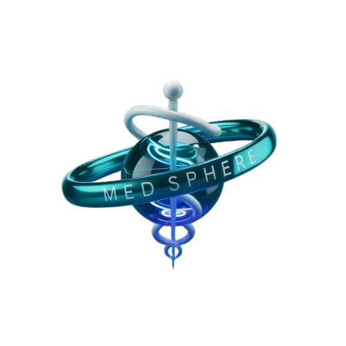

Simplifying Access to Medical Information
We're a passionate team of first-year college students with a shared vision: making medical information accessible to everyone. MedSphere was born from our belief that understanding medications shouldn't require a medical degree. Our platform bridges the gap between complex pharmaceutical data and everyday users, empowering you to make informed decisions about your health.
Our Mission
Our Mission
At MedSphere, we're on a mission to democratize access to pharmaceutical information. We believe that everyone deserves to understand the medications they take – from how they work to potential side effects. By combining technology with healthcare expertise, we've created a platform that translates complex medical jargon into clear, actionable insights.
Key Features
Key Features
Drug Details
Access comprehensive drug information including purpose, dosage, side effects, chemical structure (via SMILES), and safety guidelines. MedSphere gives users a clear, structured view of each medicine to support smarter health decisions.
Comparison
Compare two medicines side by side to understand their similarities in composition, effects, and purpose. View similarity percentage and make informed decisions with the help of graph representation.
Find Alternative
Discover alternative drugs with similar properties, indications, or therapeutic uses. Useful when looking for substitutes due to availability, cost, or side effects.
Our Technology Stack
Our Technology Stack
We leverage cutting-edge technologies to deliver accurate, up-to-date medical information in an accessible format. Here's what powers our platform:
Gemini API
Reads the 10 nearest approved drugs and picks the closest substitute, using only the DrugBank data it is given.
Sentence embeddings (all-MiniLM-L6-v2)
Turns each drug's categories, targets, indication and mechanism into a 384-number vector, once, offline. Similar drugs have nearby vectors.
Flask
Lightweight Python web framework for routing and logic.
FAISS
Stores 17,436 precomputed drug embeddings and searches them by cosine similarity in milliseconds, so no model has to run at request time.
NIH CACTUS
Draws 2D chemical structures from each drug's SMILES string.
General Frontend Technologies
We use HTML5 for content structure, CSS3 for modern dark theme styling, and JavaScript to enable dynamic interactions and enhance user experience.
Lucide Icons / Emojis
Modern, intuitive icons for a user-friendly interface.
Our Data Sources
Our Data Sources
We aggregate and verify information from multiple authoritative sources to ensure accuracy and reliability:
DrugBank
Provides high-quality information about marketed drugs, including package inserts and labeling.
Learn moreMeet Our Team
Meet Our Team
Arpita Tripathi
Frontend Developer
She structured the MedSphere website using HTML5, styled it with CSS3, and added dynamic features with JavaScript. She also integrated an API to display interactive 2D graphs, enhancing the user experience with data visualization.
Saurabh Bisht
Backend Developer
I developed the server-side infrastructure using Flask, integrated APIs like Gemini, and ensured smooth data handling to support the website's features. He played a key role in making the site's functionalities work seamlessly, ensuring fast, reliable performance.
Anand Singh
Web Scraper
As a web scraper for the MedSphere project, He focused on extracting valuable data from various sources, ensuring accurate and up-to-date information for the website. Using tools like Selenium, He automated the process of gathering and organizing data from platforms like WebMD, DrugBank and many more.
Ready to explore the world of medications with confidence?